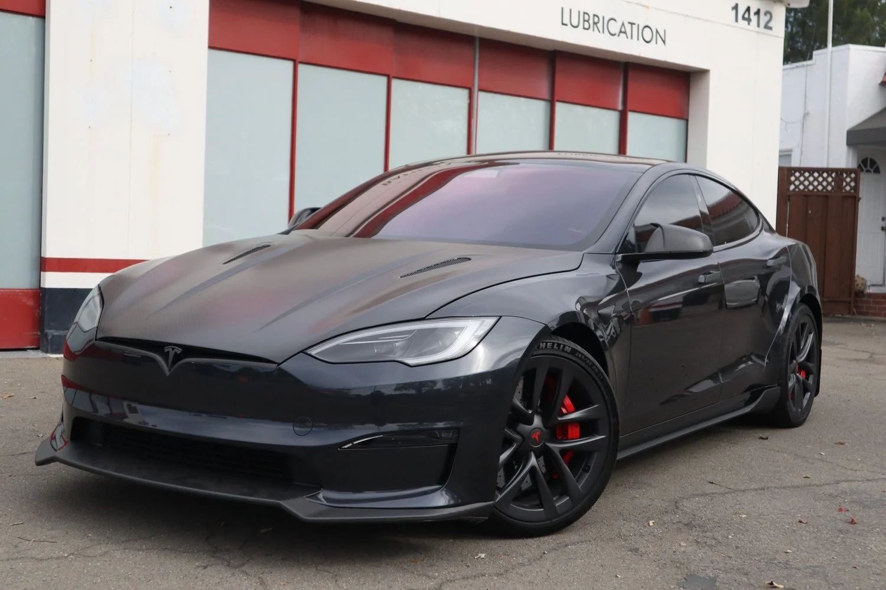
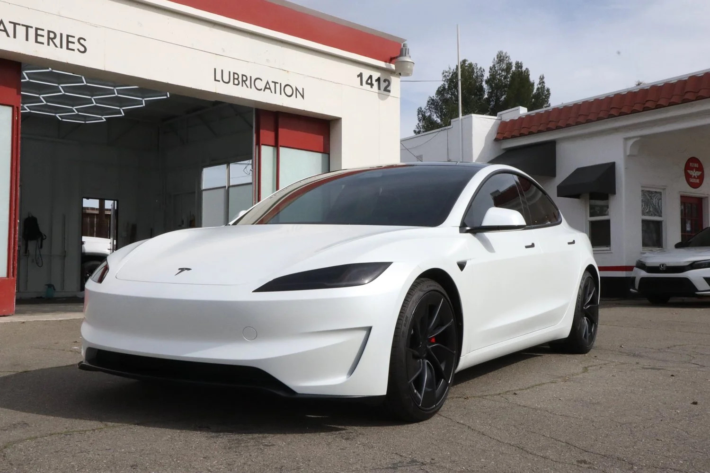

Help keep heat out
Ceramic film targets solar heat through the glass, helping take the edge off sunny California drives.

Less heat, less glare and a cleaner look. Professional ceramic window tint, installed by SosaaTintz in Livermore.
From your morning commute on I-580 to a sunny afternoon in the Tri-Valley, ceramic tint helps make time behind the wheel more comfortable. Choose performance, privacy and a finish that suits your vehicle.
Ceramic film targets solar heat through the glass, helping take the edge off sunny California drives.
Soften bright sunlight for a more comfortable view of the road. The team can help you choose your shade.
UV-rejecting film helps reduce the exposure that contributes to fading in seats, dashboards and trim.
A clean, even shade gives your car a finished look, with options to balance privacy and visibility.
Film performance varies by product, shade and vehicle glass. Confirm the film specifications included in your $299 package with SosaaTintz.

Good tint starts with people who care about the finish. At SosaaTintz, precision window tint meets personal attention. The Livermore team works on Tesla, luxury and daily driven vehicles across the Tri-Valley and Bay Area. Talk through your shade and coverage, then leave with a finish made for your car and your everyday drive.
A clear offer. A local team. A finish you'll enjoy every time you walk up to your car. Here's what to know before you book.
Start with your vehicle details. SosaaTintz will confirm eligibility, included windows and the final package before you book.
Get more than darker glass. Ceramic film helps reduce heat and UV exposure without the metal found in older metallic films.
Visit us at 1414 Portola Ave. We're a local choice for Livermore and drivers across the Tri-Valley.
Clean glass, precise fitting and attention to the edges. The little details make the result feel right.
Know what you are booking. Ask the team about the installed film, included windows, aftercare and any warranty terms that apply to your package.
Talk through shade, coverage and aftercare with the team. Leave knowing how to look after your newly tinted glass.
Confirm film, glass coverage, warranty terms, old-film removal and taxes before booking.
Explore the vehicles and finishes in SosaaTintz’s gallery. From everyday comfort to standout style, find inspiration for your next upgrade.



Genuine SosaaTintz shop work across tint and vehicle protection services. Individual vehicles and packages vary.
Explore SosaaTintz’s tint service ↗4.9 out of 5 · 147 Google reviews.
“Super clean and precise work!”Read review on Google ↗
“I had an amazing experience working with Sosaa to get my car protected by PPF and tinted.”Read review on Google ↗
“I had my Cybertruck’s windows tinted, and they turned out great.”Read review on Google ↗
Tell us what you drive. We'll help you find your shade.
Vehicle eligibility, included windows, film, warranty, removal and taxes confirmed by the shop before booking.
Prefer a conversation? (925) 752-5705 ↗Loading your quote form…
Our ceramic window tint promotion is $299. Tell us your vehicle's year, make and model so the team can confirm eligibility, the included windows, installed film and any removal costs or taxes before you book.
Ceramic tint helps reduce solar heat, glare and UV exposure while adding privacy. It offers a comfort upgrade beyond simply darkening the glass. Performance depends on the chosen film and shade.
Installation timing depends on your vehicle, selected windows and any existing film removal. SosaaTintz will confirm the appointment length when you book.
Tell us your priorities: comfort, privacy, glare reduction or visibility. The team can explain suitable shade options and check the requirements for your vehicle's glass.
Follow the curing and aftercare instructions provided by SosaaTintz at pickup. The waiting period depends on your film and conditions; ask the installer before rolling the windows down.
SosaaTintz advertises lifetime warranty options for its window films. Ask the team to confirm the installed film, written coverage and exclusions for your $299 package before booking.
Visit us at 1414 Portola Ave, Livermore, CA 94551, serving the Tri-Valley. Get directions ↗ or call (925) 752-5705.